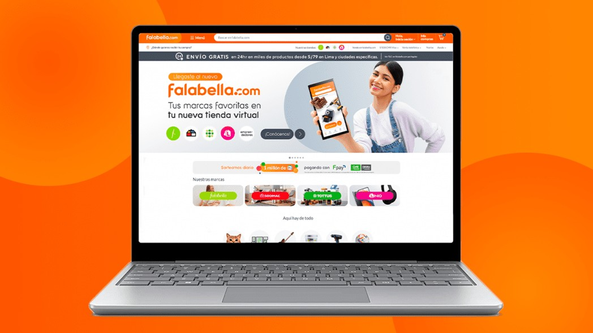
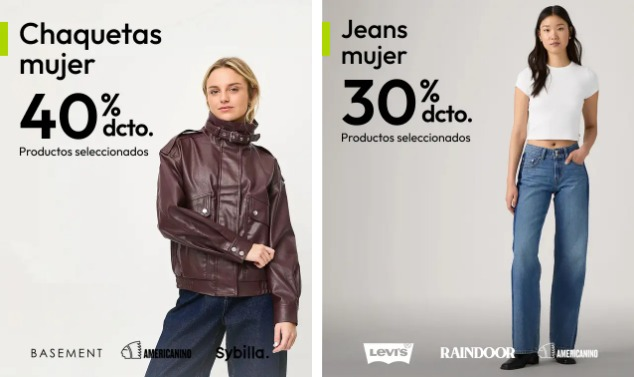
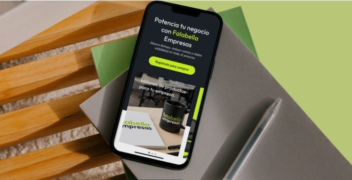
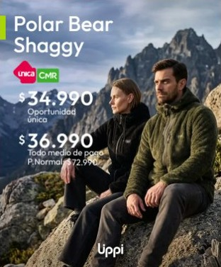
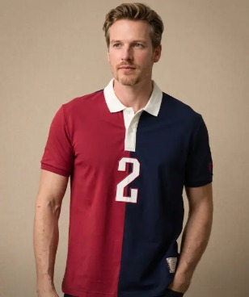
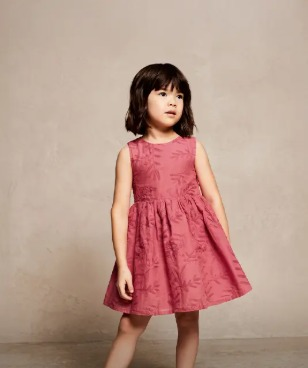

Qué necesita, qué aporta, qué mercado enfrenta y a qué riesgos se expone el marketplace más grande del grupo.
NRC 34946 · Docente: Carlos Alberto Márquez Moscoso
Universidad Continental · Arequipa, 2026

Cuatro marcas en un solo marketplace dependen de tecnología, organización y personas (Laudon y Laudon, 2016).

Catálogo de Falabella, Sodimac, Tottus y Linio más miles de sellers: variedad y confianza para el cliente, audiencia para el vendedor.

Fulfillment by Falabella, Seller Center autogestionable, financiamiento, pagos (Fpay) y marketing para escalar.

Tarjeta CMR, Puntos CMR y cuotas preferenciales: compra, crédito y lealtad en una sola experiencia.
Tendencias: marketplaces, omnicanalidad, última milla e IA. Brechas: baja bancarización, informalidad y desconfianza en pagos (CAPECE, 2024; PCMI, 2025).


Moda y accesorios, una categoría clave del canal onlineFalabella.com combina tecnología, ecosistema financiero y alcance omnicanal para aprovechar un mercado en expansión, pero debe cuidar de forma activa la seguridad, la confianza y la logística.
Business Empresarial. (2023). falabella.com lidera la innovación en el comercio electrónico peruano con estrategia omnicanal. businessempresarial.com.pe
Cámara Peruana de Comercio Electrónico. (2024). Observatorio del comercio electrónico Perú 2024–2025. capece.org.pe
CEPLAN. (s.f.). Exacerbación del fraude informático. Observatorio Nacional de Prospectiva.
Drew. (2025). Caso Falabella: del retail tradicional al e-commerce. blog.wearedrew.co
Laudon, K. C., & Laudon, J. P. (2016). Sistemas de información gerencial (14.ª ed.). Pearson.
Payments and Commerce Market Intelligence. (2025). Actualización sobre el mercado del comercio electrónico de Perú. paymentscmi.com
Pozo Hernández, C. G., Reascos Pinchao, R. S., & Minaya Macías, R. W. (2023). Comercio electrónico y riesgos de seguridad de la información durante la pandemia de COVID-19. Pentaciencias, 5(6), 851–864.
Imágenes: capturas de falabella.com.pe y Saga Falabella, con fines académicos.